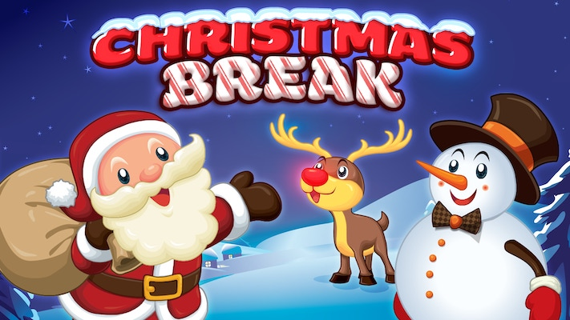

Durring December break, those who celebeate Christmas can participate in festive traditions, such as advent calenders, pciking out a tree, buying and recieving pressents, cooking and eating sertain foods, and lots of decorating!! You also have multiple weeks for break, so you can go on a longer ski trip! (or travel somewhere where it is still warm and enjoy a summer-like, beach expierience!) There is always fun to have around the holidays!!!! "Figure skating is ALWAYS a good option!" -Abby Fullerton
